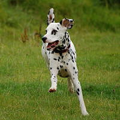

General
The Dalmatian is a breed of large dog, noted for its unique black or liver spotted coat and mainly used as a carriage dog in its early days. Its roots trace back to Croatia and its historical region of Dalmatia. Today, it is a popular family pet and many dog enthusiasts enter Dalmatians into kennel club competitions.
Looking
The Dalmatian is a large, well-defined, muscular dog with excellent endurance and stamina. When full grown, according to the American Kennel Club breed standard, it stands from 19 to 23 inches (48 to 58 cm) tall, with males usually slightly larger than females. The Kennel Club in the UK allows a height up to 24 inches (61 cm). The body is as long from forechest to buttocks as it is tall at the withers, and the shoulders are laid back. The Dalmatian's feet are round with well-arched toes, and the nails are usually white or the same colour as the dog's spots. The thin ears taper towards the tip and are set fairly high and close to the head. Eye color varies between brown, amber, or blue, with some dogs having one blue eye and one brown eye, or other combinations.

Health
Dalmatians are a relatively healthy and easy to keep breed. Like other breeds, Dalmatians display a propensity towards certain health problems specific to their breed, such as deafness, allergies and urinary stones. Reputable breeders have their puppies BAER (Brainstem Auditory Evoked Response) tested to ensure the status of the hearing on their pups. The Dalmatian Club of America lists the average lifespan of a Dalmatian at between 11 and 13 years, although some can live as long as 15 to 16 years. Breed health surveys in the US and the UK show an average lifespan of 9.9 and 11.55 years, respectively. In their late teens, both males and females may suffer bone spurs and arthritic conditions. Autoimmune thyroiditis may be a relatively common condition for the breed, affecting 11.6% of dogs.